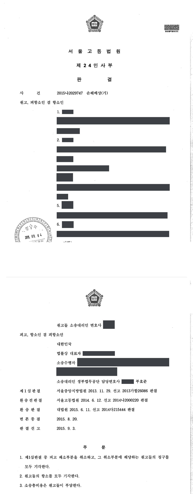

긴급조치 위반 수사·기소 관련 국가배상 청구소송 (항소심)
서울고등법원 2015나2029747 · 담당변호사 부효준
판결문

사건의 요지
1970년대 긴급조치 위반 혐의로 영장 없이 체포·구금되었던 사람들이 국가배상을 구한 사건으로, 긴급조치에 근거한 수사·기소 행위의 불법행위 성립 여부와 소멸시효가 다투어졌습니다. 항소심은 제1심의 인용 부분을 취소하고 청구를 모두 받아들이지 않았습니다.
사건의 주요 내용
원고들은 1974년 대학생으로서 학생운동에 참여하였다가 대통령긴급조치 제1호·제4호 위반 혐의로 영장 없이 체포·구금되었고, 짧게는 한 달 남짓, 길게는 넉 달가량 구금된 뒤 기소유예·구속취소 등으로 석방된 6명입니다. 원고들은 긴급조치의 발령과 그에 따른 수사·구금, 수사 과정의 가혹행위, 석방 뒤의 사찰이 모두 국가의 불법행위라고 주장하며 2013년 4월 국가를 상대로 1인당 2억 5,000만 원에서 3억 5,000만 원의 손해배상을 구하는 소를 제기하였습니다.
제1심은 2013년 11월 원고들의 청구를 일부 받아들였고, 쌍방이 항소한 환송 전 항소심 판결을 대법원이 2015년 6월 파기환송하였습니다. 이 사건은 그 환송 후 항소심으로, 부효준 변호사는 피고 대한민국을 대리하였습니다. 항소심은 2015년 9월 제1심판결 중 피고 패소 부분을 취소하고 그 부분 원고들의 청구를 모두 받아들이지 않았으며, 원고들의 항소도 이유 없다고 보았습니다.
쟁점
- 대통령의 긴급조치 제1호·제4호 발령행위 자체가 국가배상법 제2조 제1항의 불법행위에 해당하는지
- 당시 시행 중이던 긴급조치에 따라 영장 없이 체포·구금하여 수사한 수사기관의 직무행위가 공무원의 고의·과실에 의한 불법행위에 해당하는지
- 수사 과정의 가혹행위로 인한 손해배상채권이 구 예산회계법 제96조의 5년 소멸시효로 소멸하였는지, 피고의 소멸시효 항변이 신의성실의 원칙에 반하는지
원고의 주장
- 긴급조치 제1호·제4호는 발동요건을 갖추지 못하고 국민의 기본권을 지나치게 침해한 위헌·무효의 조치이므로, 대통령이 이를 발령한 행위 자체가 직무집행 과정에서 저지른 위법행위에 해당한다고 주장하였습니다.
- 위헌·무효인 긴급조치를 위반하였다는 이유로 수사기관이 원고들을 영장 없이 체포·구금한 행위도 위법하고, 수사 과정에서 가혹행위를 당하고 변호인 접견과 가족 면회가 제한되는 등 절차적 기본권을 침해당하였다고 주장하였습니다.
- 석방된 뒤에도 공안당국의 지속적인 미행·감시와 불법적인 가택수색·연행으로 정상적인 가정·직장·사회생활을 할 수 없었으므로, 국가는 국가배상법 제2조 제1항에 따라 이를 배상하여야 한다고 주장하였습니다.
부효준 변호사의 주장
- 대통령의 긴급조치 발령은 고도의 정치성을 띤 국가행위로서 국민 개개인에 대한 관계에서 민사상 불법행위를 구성하지 않고, 당시 시행 중이던 긴급조치에 따라 수사기관이 한 체포·구금 등 직무행위도 긴급조치가 사후에 위헌·무효로 선언되었다는 사정만으로 공무원의 고의·과실에 의한 불법행위가 되지 않는다는 대법원 판례의 법리를 주장하였습니다.
- 수사 과정의 가혹행위나 석방 뒤의 사찰은 원고들의 본인신문 외에 이를 뒷받침할 증거가 없고, 설령 그러한 사실이 있었더라도 1970년대 중반의 불법행위로 인한 손해배상채권은 구 예산회계법 제96조가 정한 5년의 소멸시효가 완성되었으며, 원고들이 과거사정리위원회에 진실규명을 신청한 사실도 없어 피고가 시효 완성을 주장하는 것이 신의칙에 반하지 않는다고 주장하였습니다.
법원의 판단
법원은 먼저 긴급조치 제1호·제4호가 유신헌법 제53조의 요건을 결여하고 표현의 자유, 영장주의와 신체의 자유 등 국민의 기본권을 침해한 위헌·무효의 조치라는 대법원 전원합의체 판결의 판단을 전제로 하면서도, 대통령의 긴급조치권 행사는 고도의 정치성을 띤 국가행위로서 국민 전체에 대한 정치적 책임을 질 뿐 국민 개개인에 대하여 법적 의무를 지는 것은 아니므로 그 발령행위 자체가 국가배상법 제2조 제1항의 불법행위에 해당하지 않는다고 보았습니다(대법원 2015. 3. 26. 선고 2012다48824 판결).
수사기관의 직무행위에 관하여도, 당시 유신헌법 제53조 제4항이 긴급조치는 사법적 심사의 대상이 되지 않는다고 규정하고 있었고 긴급조치가 위헌·무효로 선언되기 전이었으므로, 영장 없이 체포·구금하여 수사한 행위를 공무원의 고의·과실에 의한 불법행위로 보기 어렵다고 판단하였습니다(대법원 2014. 10. 27. 선고 2013다217962 판결).
수사 과정의 가혹행위와 석방 뒤의 사찰 주장은 원고들에 대한 제1심 본인신문 결과만으로는 인정하기 부족하다고 보았습니다. 설령 가혹행위가 있었더라도 그로 인한 손해배상채권은 구 예산회계법 제96조에 따라 불법행위일로부터 5년이 지나 시효로 소멸하였고, 원고들이 과거사정리위원회에 진실규명을 신청하거나 진실규명결정을 받은 바도 없어 권리행사에 객관적 장애가 있었다고 볼 수 없으므로 피고의 소멸시효 항변이 신의성실의 원칙에 반하지 않는다고 하였습니다. 결론적으로 제1심판결 중 피고 패소 부분을 취소하고 원고들의 청구를 모두 받아들이지 않았으며, 원고들의 항소도 이유 없다고 보았습니다.
그러나 긴급조치 제1호 및 제4호가 사후적으로 법원에서 위헌·무효로 선언되었다고 하더라도, 유신헌법에 근거한 대통령의 긴급조치권 행사는 고도의 정치성을 띤 국가행위로서 대통령은 국가긴급권의 행사에 관하여 원칙적으로 국민 전체에 대한 관계에서 정치적 책임을 질 뿐 국민 개개인의 권리에 대응하여 법적 의무를 지는 것은 아니므로, 대통령의 이러한 권력행사가 국민 개개인에 대한 관계에서 민사상 불법행위를 구성한다고는 볼 수 없다(대법원 2015. 3. 26. 선고 2012다48824 판결 참조).
따라서 대통령의 긴급조치 제1호 및 제4호 발령행위가 그 자체로서 국가배상법 제2조 제1항에서 말하는 공무원의 고의 또는 과실에 의한 불법행위에 해당하지는 아니하므로, 이와 다른 전제에 선 원고들의 이 부분 주장은 받아들일 수 없다.
서울고등법원 2015나2029747 판결 이유 '3. 가. 긴급조치 발령행위가 그 자체로 불법행위에 해당한다는 주장에 관하여'
형벌에 관한 법령이 헌법재판소의 위헌결정으로 소급하여 효력을 상실하였거나 법원에서 위헌·무효로 선언된 경우, 그 법령이 위헌으로 선언되기 전에 그 법령에 기초하여 수사가 개시되어 공소가 제기되고 유죄판결이 선고되었더라도, 그러한 사정만으로 수사기관의 직무행위나 법관의 재판상 직무행위가 국가배상법 제2조 제1항에서 말하는 공무원의 고의 또는 과실에 의한 불법행위에 해당하여 국가의 손해배상책임이 발생한다고 볼 수는 없다. 당시 시행 중이던 긴급조치 제1호 및 제4호에 의하여 영장 없이 피의자를 체포·구금하여 수사를 진행한 수사기관의 직무행위는 유신헌법 제53조 제4항이 "제1항과 제2항의 긴급조치는 사법적 심사의 대상이 되지 아니한다."고 규정하고 있었고 긴급조치 제1호 및 제4호가 위헌·무효임이 선언되지 아니하였던 이상, 공무원의 고의 또는 과실에 의한 불법행위에 해당한다고 보기 어렵다(대법원 2014. 10. 27. 선고 2013다217962 판결 참조).
서울고등법원 2015나2029747 판결 이유 '3. 나. 긴급조치에 의한 수사기관의 직무행위 자체가 불법행위에 해당한다는 주장에 관하여'
또한 원고들이 과거사정리위원회에 진실규명신청을 하였다거나 과거사정리위원회가 직권으로 진실규명결정을 하지도 않았는바, 원고들이 피고에 대하여 이 부분 손해배상청구권을 행사할 수 없는 객관적 장애사유가 있었다거나 피고가 소멸시효의 완성을 들어 권리소멸을 주장하지 아니할 것이라는 데 대한 신뢰를 가지게 할 만한 특별한 사정이 있다고 보기도 어려우므로 원고들의 이 사건 청구에 대하여 피고가 시효소멸의 항변을 하는 것이 신의성실의 원칙에 반하여 허용되지 아니한다고 할 수 없다(대법원 2015. 4. 9. 선고 2014다234155 판결 등 참조).
서울고등법원 2015나2029747 판결 이유 '3. 다. 수사과정에서의 개별적 불법행위 관련 주장에 관하여'
※ 판결 이유 가운데 이 사건의 판단 기준이 된 부분을 그대로 옮긴 것으로, 당사자 이름 등은 가렸습니다.
이 사건이 보여 주는 것
긴급조치 피해에 관한 국가배상 사건에서 법원은 ① 긴급조치 발령행위 자체, ② 긴급조치에 따른 수사기관의 체포·구금 등 직무행위, ③ 수사 과정의 개별적 가혹행위를 나누어 판단해 왔습니다. 이 판결은 ①·②를 당시의 대법원 판례에 따라 불법행위로 보지 않고, ③은 증거와 소멸시효의 문제로 다룬 사례입니다. 다만 대법원은 2022년 8월 전원합의체 판결(2018다212610)로 긴급조치의 발령과 그에 따른 수사·재판을 전체적으로 보아 국가배상책임을 인정하는 쪽으로 판례를 변경하였으므로, 이 유형의 사건은 현재 다른 결론에 이를 수 있습니다.
또한 수사 과정의 가혹행위처럼 개별적인 위법행위를 주장하는 경우에는 본인의 진술 외에 이를 뒷받침할 객관적 자료가 필요하고, 국가에 대한 금전채권의 소멸시효(당시 구 예산회계법 제96조에 따른 5년)와 과거사정리위원회의 진실규명결정 여부가 결론을 좌우한다는 점도 유념할 필요가 있습니다.
관련 법령국가배상법 제2조 제1항 · 구 대한민국헌법(유신헌법) 제53조 · 대통령긴급조치 제1호, 제4호 · 구 예산회계법 제96조
관련 단어긴급조치국가배상유신헌법 제53조고도의 정치성을 띤 국가행위영장 없는 체포·구금소멸시효구 예산회계법 제96조과거사정리위원회신의성실 원칙환송 후 항소심배상책임 불인정
비슷한 처분을 받으셨다면
행정처분은 처분이 있음을 안 날부터 90일 이내에 행정심판이나 취소소송으로 다투어야 하고, 기간이 지나면 돌이킬 수 없는 처분은 집행정지를 서둘러야 합니다. 처분서를 받은 날짜부터 확인해 드립니다.